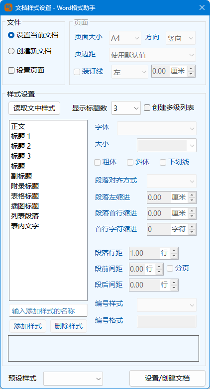
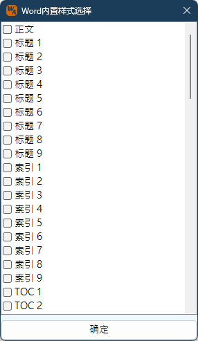

Ribbon菜单Word 格式助手中如下图所示部分可进行快速样式设置：
单击该按钮，则可调出如下文档样式设置界面：
可以选择使用当前文档设置格式或者新建一个文档设置。
设置文档的页面尺寸，方向、页面边距以及装订线位置，程序默认读取当前文档的设置。默认页边距即为本程序默认设置的页边距，可以通过应用设置修改。
样式列表栏在首次启动中为空，可以通过输入自定义样式名称添加一个自定义样式，或者打开内置样式选择窗口，选择需要设置的内置样式。样式列表同时显示内置样式和自定义样式，选择任意一个样式，右侧的样式设置中将显示当前选择样式的内容，包括字体、段落格式等。样式支持多选模式。
当点击选择内置样式按钮，将出现左侧窗口。内置样式是Word自带的，不可删除且作为自定义样式基础的样式，本程序只列出段落样式用于设置。选择的内置样式将会出现在样式列表窗口内。首次载入内置样式时，将读取当前文档的样式内容，例如字体、段落格式等。
只能新建自定义样式，且名称不能与内置样式或者已存在的自定义样式重复。当点击添加样式按钮时，程序将检查是否重复命名。删除样式仅将样式从样式列表中移除，后续修改应用，将不涉及到此样式，并不会删除文档中的样式。但同时，也将删除该样式的所有设置内容。
修改样式设置组下的任何内容，例如字体、段落样式、颜色等，对应于样式列表中的所选择的所有样式的内容都将同步修改。当选中多个样式时，可以同时调整选中样式的格式内容；选中多项时，下方的预览及信息框将只显示第一项样式的内容。
编号样式严格来说不算样式设置内容之一，是一项关联设置，即样式中本身不包含编号样式。因此新建样式或者从文中读入的内置样式是不具备编号样式的，但是设置后，可以将此编号样式关联到对应的段落样式。
程序预设公文风格、论文风格、报告风格、条文风格的4种样式的设置，当选择其一后，预定设置将覆盖当前的样式列表的所有设置。
可以将当前设置的样式导出为一个独立的XML文件，在后续使用时，以导入该文件保存的所有样式。
点击后按照上述设置对当前文档或新建文档，并设置样式，如果样式为Word本身的样式则用本程序的设置修改样式，如果没有则新建该样式。
使用样式功能应注意如下事项：